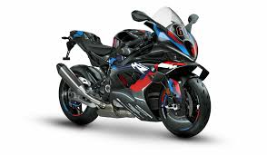
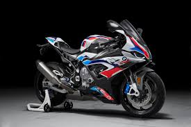

M100RR
| Marca |
Modelo |
Ano |
Preço |
Oleo |
| BMW |
M100RR |
2020-atual |
R$147.569,00 |
SAE 5W-40 |
- Curiosidade 1: Foi a primeira BMW Motorrad “M” de verdade, levando a divisão M para uma moto de produção.
- Curiosidade 2: Ela trouxe os M brakes pela primeira vez em uma moto da BMW Motorrad.
- Curiosidade 3: Na evolução de 2023, ganhou dutos de refrigeração de freio em carbono, e a BMW informou que eles ajudam a reduzir a temperatura dos freios em até 50 °F no uso em pista.
- Curiosidade 4: Torque: 11,52 kgf.m a 11100 rpm

